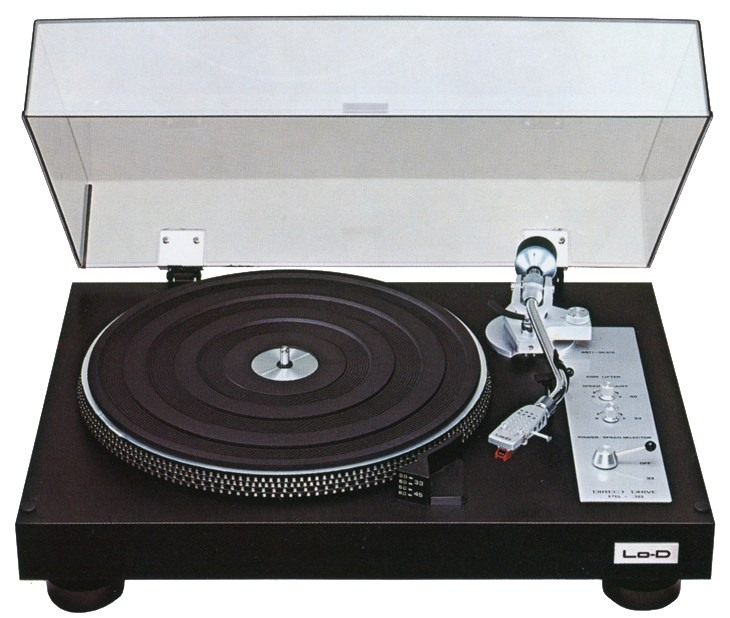

Lo-D PS-38 — Black

Японский проигрыватель с прямым приводом в строгом чёрном исполнении.
Технические характеристики
| Привод | Прямой |
|---|---|
| Управление | Ручное |
| Тонарм | S-образный |
| Скорости | 33⅓ / 45 об/мин |
| Исполнение | Чёрное |
Сильные стороны
- Надёжная конструкция прямого привода
- Классическая компоновка
- Удобен для настройки сменных картриджей